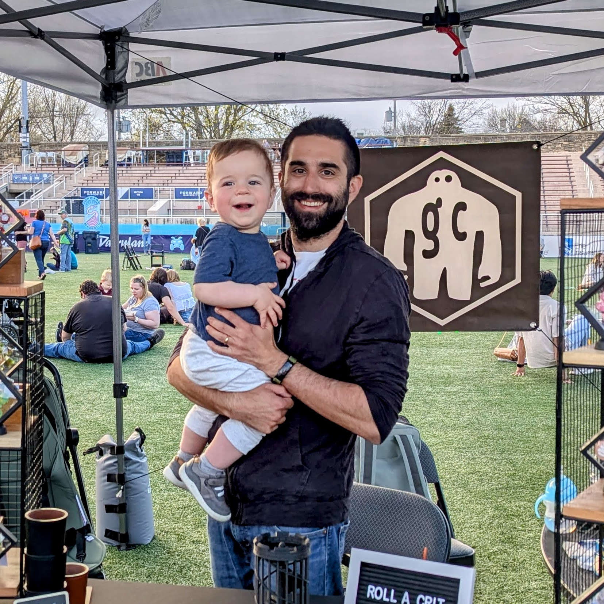

Made by one person, in one small shop.
Golem Craftworks is Ross, a CNC router, a laser, and a lot of sanding in Madison, Wisconsin.

How it started
The shop is where a few different hobbies converged, each of which I got into in a different way: dice making, woodworking, 3D modeling, FDM 3D printing, resin 3D printing, laser engraving, and playing D&D with my friends.
The golem is my favorite folklore monster. It represents the pinnacle of craft and knowledge, but it's also a reminder that even the most beautiful creations can turn on you. In my case, my hobbies threaten to completely consume me.
How pieces are made
Every product starts as a 3D model that I make myself in CAD software.
Dice
I use a resin 3D printer to print high-fidelity "master dice", which go through a careful curing and off-gassing process. I sand and polish the masters by hand, which takes many hours: each face on each die goes through 6 grits, which means polishing 492 faces at about a minute each.
Then I make silicone cap molds from the masters, which is its own entire discipline. Once the mold is made I pour epoxy resin, cure it under pressure with a specialized tool, then sand and polish the resulting dice. This takes less time than the masters, but it's still very messy and time consuming. Then I paint the numbers by hand, do one final polish, and the dice are done.
Wood
I start with rough sawn hardwood lumber, which I try to source locally. I surface, joint, and plane the lumber and cut it to size. Then I spend a long time developing CNC toolpaths in CAM software, where it's very easy to make a mistake and ruin a piece of wood.
Each piece goes through the CNC, gets a preliminary sanding, then goes through the laser engraver, which has its own special software and learning curve. After that I sand, rout the chamfers, and finish with crystal clear lacquer.
Where to find me
Buy here, on Etsy, or in person at local markets. I'm pretty much done for 2026, but my last shows will be at Tattersall Distillery in River Falls, Wisconsin, on Saturday and Sunday, November 28 and 29.